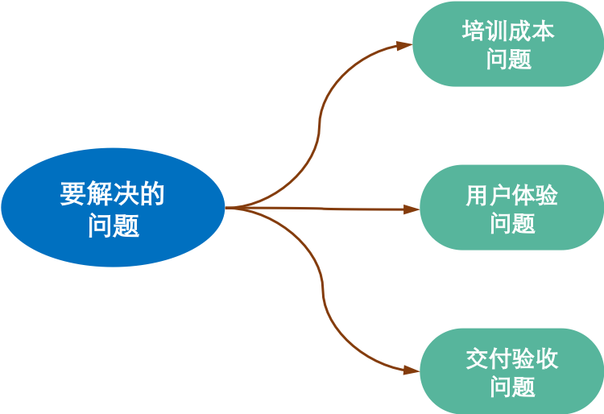

/ 1 /
2013年底，我们给一家工业企业客户提供管理软件系统。系统上线前，企业客户提出来一个需求，想要在生产现场的某个数据采集中使用触摸平板。为了满足客户的需求，我们做了一番选型。
经过一番调研，我们发现，市面上存在的触摸平板多是两种类型：一种是基于WinCE系统的PDA型的平板，另一种是基于WinXP普通触摸平板。
基于WinCE的PDA平板，基本上都是传统的WinFrom的方式做的应用，界面不够友好，交互很糟糕，那会儿还需要触摸笔来操作。而基于WinXP的触摸平板，其实就是把屏幕转变成鼠标，操作系统还是传统的WinXP，软件系统就是传统的桌面端的软件，依然是看起来很专业，但用起来很费劲。
彼时彼刻，我们就很纳闷了：无论是iOS还是Android，都已经发展了七八年之久，技术非常成熟了，交互体验等各种特性非常好，为何没有一款基于移动系统的工业平板呢？
后来，在我们的推动下，我们的一家硬件合作厂商终于做出来市面上第一款基于Android系统的工业平板。那会儿，平板的Android系统还不是烧在平板的硬盘里，而是装在一个SD卡上，插在平板卡槽里，系统选择SD卡启动才能硬启动起来。
虽然这第一款基于Android系统的工业平板很简陋，这不妨碍基于Android的工业平板迅速发展，在半年至一年后，成为工业平板的主流配置。现如今，大多数的工业平板都是基于Android移动操作系统的。
/ 2 /
我们为什么要使用基于Android系统的工业平板呢？出发点是想要解决几个管理软件实施中的问题。

首先，我们想要解决的问题是培训问题。
我们企业刚刚起步，没有那么多的人力物力投入到用户的使用培训中。但为了让系统能很快的被用户熟练使用，我们就在琢磨：有没有什么办法，让用户可以在几乎不用培训的情况下，快速而熟练的掌握系统么？
答案是如果系统本身是用户比较熟悉的系统，那么他们掌握使用方法自然很快，还不用培训。那什么系统是用户比较熟悉的呢？答案是手机系统。人人都有手机，多数是基于Android的手机，人们已经很熟悉并习惯Android系统优雅的交互方式和良好的用户体验。给他们一个Android系统的APP，他们只要稍微点点划划，很快就会用了。
基于这几点考虑，我们就想，为什么不能把管理软件系统做成手机APP的形式，并给用户提供一个类似手机操作的环境呢？于是，我们就想要寻找基于Android系统的工业平板，并开发基于安卓APP的管理软件系统模块。
其次，我们还想要解决的问题是管理软件系统最终用户的使用体验问题。
传统的管理软件系统，专注于解决特定的管理问题或业务问题，以提升企业的管理效率或业务运行效率。系统专业是够专业了，专业的前提是牺牲了最终用户（企业中操作系统的普通员工）对产品使用的易用性和良好的用户体验。
太多的传统管理软件系统，如果不经过培训，普通人想要弄清楚系统怎么用，是十分困难的事情。因而，传统管理软件系统实施的过程中，培训是个重要的环节，需要投入一定的精力去处理培训的，这就是我们想要解决的第一个问题点。
也因为传统管理软件系统学习成本高、使用的复杂度高，实际上很多传统管理软件系统，对最终用户而言，是增加工作量的，也增加了工作的复杂性，从而企业中的最终用户从内心里是抵制系统实施的。
要知道，成功实施并运行一套管理软件系统，困难重重。而最终用户，想要搞瘫掉运行中的系统，那是分分钟钟的事情。为了保证项目的成功实施，考虑减轻最终用户的工作量，给他们体统良好的用户体验，是我们必须要解决的问题。
还有，我们在项目中发现，签订合同也许只要搞定客户（企业的管理者、决策者）即可，但项目验收的话，还需要搞定多数的最终用户。
在传统的2B的市场销售观念里，最注重的是企业客户，即企业的决策者；其次重视的是利益相关者，即决策的影响者；最为不重视的是最终用户。传统的2B销售里有个说法：只要搞定了客户，就能把东西卖给企业；至于好用不好用，说了算的人也不用，用的人说了不算。
问题是，市场销售的时候也许只需要搞定客户即可。但是项目的交付，最终用户也是可以产生影响的。
系统实施过程中乃至运行时，客户会直接使用系统的情形很少，他们无法直接自己得出对系统的评价，他们需要通过获取最终用户、中层管理者等人的反馈信息，进而形成对系统成功与否的判断。最终用户如果抵制使用系统，给与系统最负面的评价，那么项目最终失败的可能性会很大。
再有就是上面提到的， 最终用户可以很容易的把系统给搞瘫痪，只要让你的系统时不时的瘫痪一下，并对企业客户的管理运营带来影响。企业客户（管理者、决策者）也很容易形成「你的产品不靠谱」的想法，继而想要完成最终交付验收，会是很困难的事情。
随着国内商业环境的发展，人难招、用人难、人难管等问题开始显现。由此造成，即使在2B领域里，最终用户的影响力开始凸显起来，也开始有一定话语权。在现在的2B业务中，完全不考虑最终用户的做法，越来越不可行。
/ 3 /
我们回到重点关注的业务增长类话题。
2B类业务的增长都面临着一系列的难题，这些难题在2B业务发展的几十年来都一直存在。如何解决这些难题呢？几十年来，有各种各样的企业和牛人，都在努力尝试，可惜成效并不大。
之前的各种尝试，都是在对2B业务的传统认知、对2B类业务增长的传统认知之上的。重复做同样的事情，但期待不同的结果，这可能么？也许，想要在2B类业务增长上有所突破，就需要突破传统的、旧式的认知。
其中的一点，我们认为，就是重新审视最终用户的作用。改变传统的2B类业务，只重视研究客户、不重视研究用户的习惯，也把一部分精力方法好好的研究最终用户身上。也许，打穿了最终用户的壁垒，反过来会对客户的成交带来积极的影响。
我们也看到，有些企业开始在这方面做了一些尝试。类似企业类在线文档工具，提供了很好的产品功能和用户体验，企业里的用户可以自己注册单独使用；也可以在有一定限制的情况下，与企业中的其他用户协作使用。而要用更全面的功能，或者想获得更好的服务，工具厂商就可以跟企业客户谈合作了。因为有企业内的用户体验过了产品，并产生了一定程度的依赖，工具厂商跟企业客户达成合作的难度，会降低很多很多。
这样的模式，本质上是拿用户推动客户，用2C的增长推动2B的增长，也就是把2B的业务增长2C化，这是一条可以探索的路线。
不过，对于很多「很重」的2B类业务，比如我们做的管理软件系统，如何2C化呢？这是需要好好研究的课题。